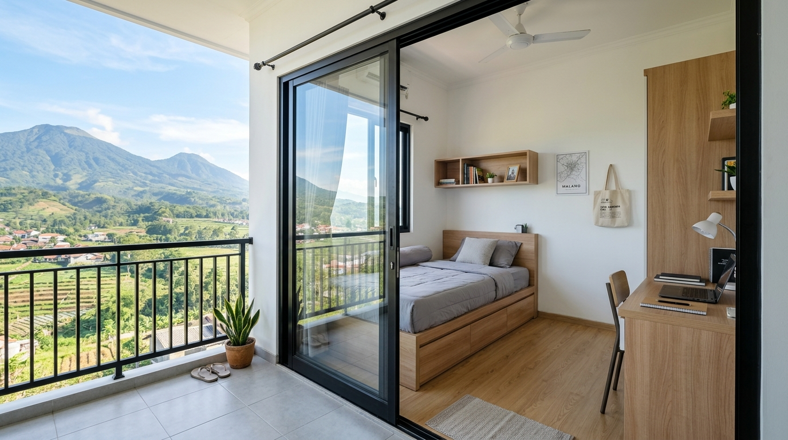
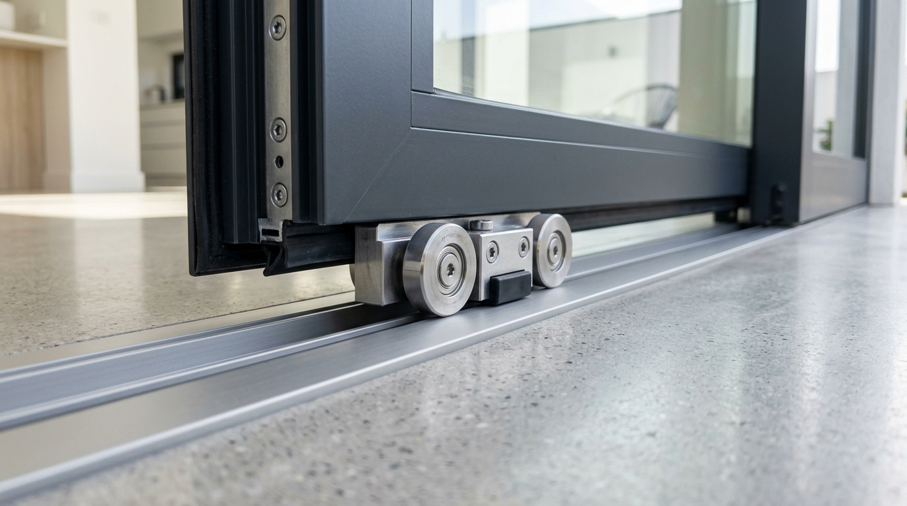

Tips Memilih Sliding Door Aluminium Murah untuk Kos-Kosan di Blimbing

📌 Ringkasan Inti
Sliding door aluminium murah di Blimbing adalah pilihan tepat untuk kos-kosan sempit karena tidak butuh ruang kibas, mudah dirawat, dan tahan lama untuk pemakaian harian.
- Pintu sliding aluminium tidak memakan ruang kibas sehingga cocok untuk kamar kos berukuran kecil di sekitar kampus Blimbing.
- Profil aluminium 3 inch sudah cukup kuat untuk kebutuhan kamar kos standar, sementara 4 inch lebih cocok untuk akses yang lebih sering dipakai.
- Pengukuran bukaan pintu yang presisi menentukan kelancaran rel geser dalam jangka panjang.
- Biaya pasang bergantung pada lebar bukaan, jenis kaca, dan jumlah panel, sehingga sebaiknya disurvei langsung sebelum menentukan anggaran.
- Kesalahan umum seperti mengabaikan celah rel dan memilih roda murah bisa membuat pintu cepat macet.
- 1. Apa Itu Pintu Sliding Aluminium dan Kenapa Cocok untuk Kos-Kosan?
- 2. Bagaimana Cara Mengukur Bukaan Pintu Geser Secara Presisi?
- 3. Berapa Kisaran Biaya Pasang Sliding Door Aluminium untuk Kos di Blimbing?
- 4. Kesalahan Umum Saat Memilih Sliding Door untuk Kos-Kosan
- 5. Tips Memilih Komponen Rel dan Perawatan Rutin Pintu Kos
Bagi pengelola dan pemilik hunian sewa di kawasan Blimbing Kota Malang, keterbatasan luas kamar kos menuntut efisiensi tata ruang maksimal. Pintu sliding aluminium menjadi jawaban praktis yang membebaskan ruang sirkulasi tanpa mengorbankan keamanan serta ketahanan pintu.
1. Apa Itu Pintu Sliding Aluminium dan Kenapa Cocok untuk Kos-Kosan?
Pintu sliding aluminium adalah pintu geser dengan rangka aluminium yang bergerak pada rel atas atau bawah, bukan berputar seperti pintu ayun. Untuk kos-kosan di Blimbing yang umumnya berukuran kamar terbatas, model ini menghemat ruang karena tidak memerlukan area kosong untuk ayunan daun pintu.
Kawasan Blimbing dan sekitarnya banyak dihuni mahasiswa dan pekerja yang menyewa kamar dengan luas terbatas, terutama di lorong-lorong dekat akses menuju kampus. Berdasarkan data Badan Pusat Statistik Kota Malang, jumlah penduduk usia produktif dan mahasiswa pendatang di Kota Malang cenderung meningkat setiap tahun ajaran baru, yang turut mendorong kebutuhan hunian sewa dengan desain hemat ruang. Kondisi ini membuat sliding door menjadi solusi yang relevan dibanding pintu konvensional.
Selain hemat ruang, aluminium juga tidak mudah lapuk seperti kayu dan lebih tahan terhadap kelembapan, sehingga perawatannya lebih sederhana untuk pemilik kos yang mengelola banyak kamar sekaligus.

2. Bagaimana Cara Mengukur Bukaan Pintu Geser Secara Presisi?
Pengukuran bukaan pintu wajib dilakukan sebelum memesan rangka aluminium agar rel geser terpasang rapat dan tidak bergeser saat dipakai berulang kali. Berikut langkah dasarnya:
- Ukur lebar bukaan dinding dari sisi kiri ke kanan pada tiga titik berbeda, yaitu atas, tengah, dan bawah, untuk memastikan dinding benar-benar tegak lurus (lot).
- Ukur tinggi bukaan dari lantai jadi (keramik/granit) hingga bagian atas kusen, bukan dari lantai semen kasar yang belum difinishing.
- Tambahkan toleransi celah pemasangan sekitar 1 hingga 2 sentimeter di tiap sisi agar rangka aluminium mudah masuk tanpa dipaksakan atau merusak plesteran dinding.
- Perhatikan posisi stop kontak, saklar, pipa air, atau instalasi lain yang mungkin menghalangi jalur rel geser saat daun pintu terbuka penuh.
- Catat semua ukuran dalam satuan milimeter yang konsisten, lalu sampaikan ke teknisi atau tukang pasang untuk dicek ulang sebelum fabrikasi rangka dimulai.
Ketelitian pada tahap ini menentukan apakah pintu bisa digeser dengan halus atau justru terasa berat dan macet setelah beberapa bulan pemakaian aktif.
Paket Pintu Sliding Aluminium Hemat Biaya Kos Blimbing
Dapatkan penawaran harga khusus paket borongan unit kos-kosan di Blimbing, Lowokwaru, dan Suhat Malang. Termasuk survei lokasi gratis, rel roda senyap, dan garansi pemasangan presisi.
3. Berapa Kisaran Biaya Pasang Sliding Door Aluminium untuk Kos di Blimbing?
Biaya pasang sliding door aluminium umumnya dihitung per meter lari atau per unit set lengkap, dan bervariasi tergantung ketebalan profil, jenis kaca atau panel, serta jumlah daun pintu yang dipasang. Untuk kamar kos berukuran standar, kebutuhan material biasanya lebih hemat dibanding ruko komersial atau partisi kantor karena bentang bukaan yang dipasang relatif kompak.
Beberapa faktor penting yang memengaruhi biaya antara lain:
- Jenis Isian Daun Pintu: Kaca bening 5mm, kaca es (buram) untuk privasi, kaca tempered, atau kombinasi panel spandrel aluminium di bagian bawah.
- Ketebalan & Merk Profil Aluminium: Profil 3 inch merk lokal bersaing seperti Alexindo atau Dacon sangat ekonomis, sementara profil 4 inch merk premium seperti YKK AP memberikan kekokohan ekstra.
- Kualitas Hardware Rel & Kunci: Penggunaan rel aluminium tebal dengan roda bearing nilon menjamin pintu meluncur halus tanpa suara berdecit.
Untuk estimasi rincian biaya per meter dan simulasi perhitungan di area komersial sekitarnya, Anda dapat membaca estimasi biaya pasang kusen aluminium ruko Lowokwaru sebagai gambaran awal sebelum konsultasi langsung.
Sebaiknya mintalah survei lokasi langsung dari aplikator berpengalaman karena kondisi ketegakan dinding dan opening tiap kamar kos kerap memiliki deviasi ukuran meski berada di bangunan yang sama.
4. Kesalahan Umum Saat Memilih Sliding Door untuk Kos-Kosan
Kesalahan paling sering terjadi adalah memilih roda rel berkualitas rendah demi menekan anggaran awal, padahal komponen roda dan rel geser inilah yang paling rentan aus akibat frekuensi buka-tutup harian oleh para penghuni kos.
Selain masalah roda rel, beberapa kesalahan umum yang sering dijumpai antara lain:
- Memilih Profil Terlalu Tipis: Ketebalan profil di bawah standar dapat membuat rangka melengkung ketika daun pintu digeser kencang.
- Mengabaikan Kunci Pengaman Tambahan: Kamar kos memerlukan kunci kait tanam khusus sliding door yang presisi agar privasi dan keamanan penghuni tetap terjamin.
- Tidak Memasang Stopper Rel: Ketiadaan karet damper/stopper menyebabkan benturan keras daun pintu dengan dinding kusen yang memperpendek usia komponen.
"Kunci keawetan pintu sliding kos-kosan terletak pada roda nilon teflon dan rel presisi. Pemilihan hardware berkualitas menghindarkan pemilik kos dari keluhan pintu seret atau anjlok setiap ganti penyewa."
5. Tips Memilih Komponen Rel dan Perawatan Rutin Pintu Kos
Agar pintu geser awet bertahun-tahun, pilihlah rel gantung atas (hanging door) jika menginginkan lantai bebas dari hambatan rel bawah, atau rel tanam bawah (floor track) yang kokoh untuk bukaan pintu utama kamar. Bersihkan alur rel bawah dari debu, pasir halus, atau rambut secara berkala menggunakan kuas kering atau vacuum cleaner.
Semprotkan pelumas silikon kering pada bearing roda geser setidaknya 6 bulan sekali. Hindari menggunakan oli kental atau gemuk gemuk berminyak pada jalur rel karena justru akan mengikat debu dan membuat putaran roda macet.
Kesimpulan Praktis
Sliding door aluminium murah di Blimbing menjadi solusi hemat ruang yang sangat relevan untuk kos-kosan dengan kamar berukuran terbatas. Pastikan pengukuran bukaan dilakukan dengan presisi, pilih ketebalan profil sesuai kebutuhan, dan hindari menekan biaya pada komponen rel dan roda geser karena bagian inilah yang paling menentukan usia pakai pintu jangka panjang.
Pertanyaan Seputar Pintu Sliding Kos Blimbing
Ya, sliding door aluminium cocok untuk kamar kos kecil karena tidak membutuhkan ruang kibas seperti pintu ayun, sehingga tata letak furnitur di dalam kamar bisa lebih fleksibel.
Profil 3 inch umumnya sudah memadai untuk bukaan pintu kamar kos standar dengan pemakaian normal, sementara profil 4 inch lebih disarankan untuk bukaan lebar atau akses yang sering dipakai bersama.
Waktu pemasangan satu unit sliding door untuk kamar kos umumnya dapat diselesaikan dalam satu hari kerja, tergantung kondisi bukaan dan kesiapan material di lokasi.